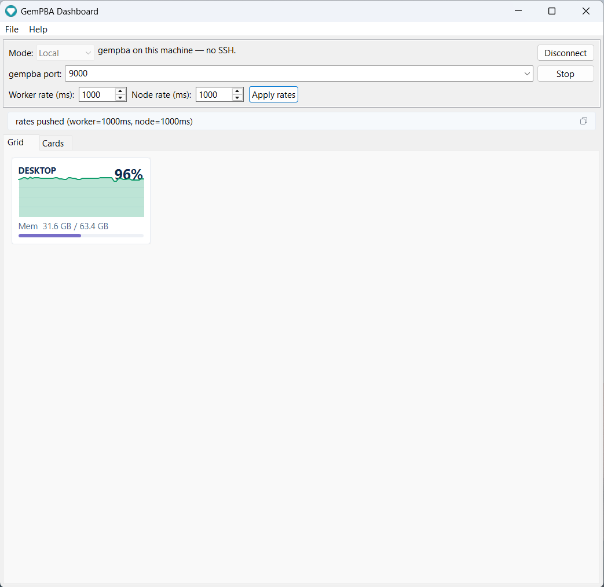
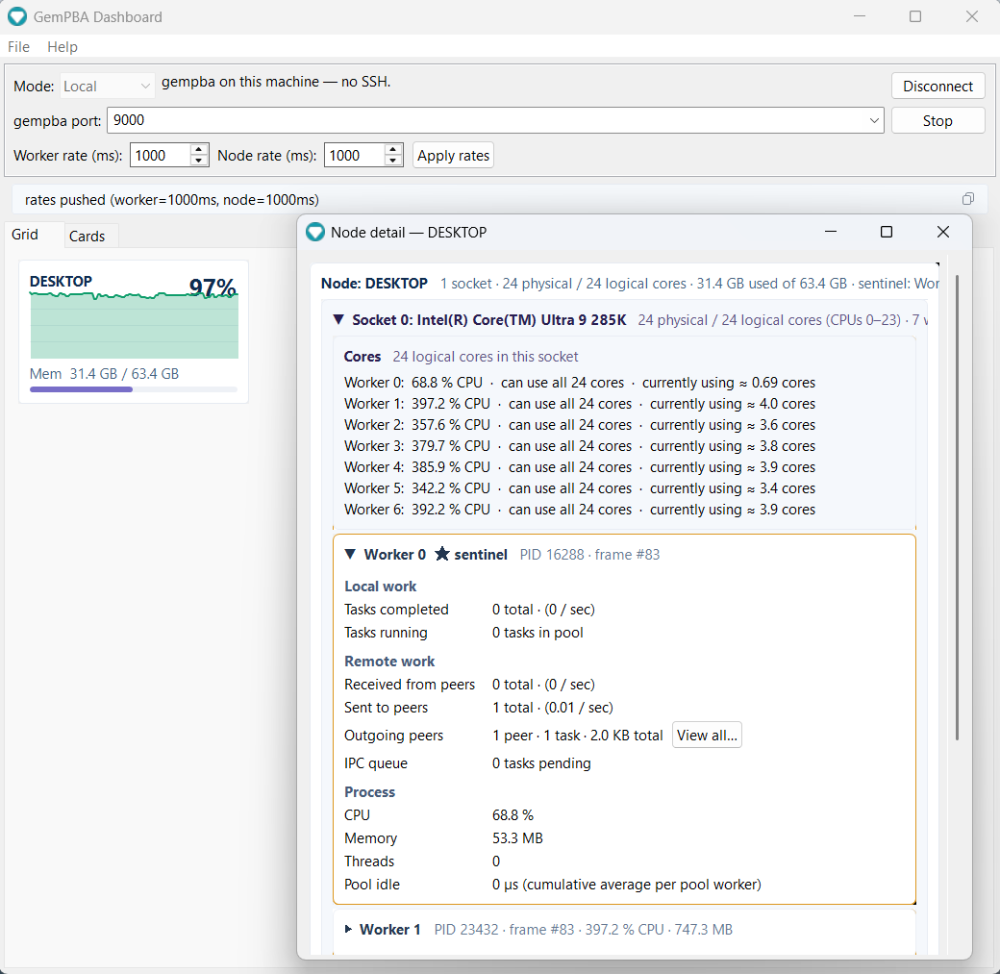
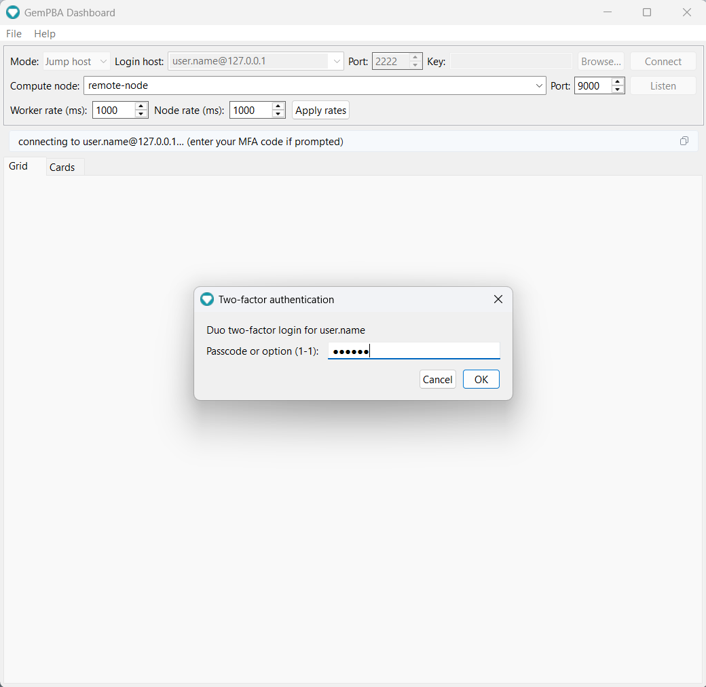

Dashboard
Let me tell you a storyWhen I was doing my master's, I was building GemPBA and testing it the only way that felt honest: by throwing real branch-and-bound problems at it on a real cluster. That sounds clean. It was not.
Most weeks went one of two ways. Either I was designing the next steps of an algorithm, or I was deep in the library hunting a bug, and the cruel part was that I could rarely tell which one I was actually doing. A run would come back wrong and I would sit there with two suspects and no alibi for either: was my library broken, or was the algorithm I was using to test the library broken? Some days it was one. Some days it was both. Most days I just did not know, and "I do not know" is the most expensive sentence in research.
So I would do what you do. I would write the batch script, set the resources, and submit it to SLURM. And then I would wait. Not minutes. Sometimes days, watching my job sit in the queue behind everyone else's, refreshing the status like it owed me money.
Finally my turn would come. The job would start. Hours would pass. I would go to sleep telling myself that this time the numbers would make sense.
They would not. The run would fail, or it would finish and quietly lie to me. And when I went digging, I would find the thing that still makes my stomach drop to remember: I had fat-fingered a setting, or misused my own library, and out of the hundreds of cores I had reserved, exactly one had done any work. One. A framework whose entire reason to exist is to use all of them, running like a single sad thread, while everything else I had been allocated sat there glowing and idle.
And here is the part nobody warns you about. Those idle cores were not free. They were mine, locked away from every other student and researcher who could have been using them while I was busy being wrong. The scheduler remembers that. Your fair share drops, and the next time you submit you wait even longer. I had paid for nothing, and then I paid for it again.
The worst of it was the blindness. Once a job is running on a cluster, it is a sealed box. You cannot see inside. You cannot tell whether the machine is roaring or asleep. You wait, and you hope, and you find out at the very end whether the last three days of your life meant anything.
So one day I tried to fix the blindness by hand. I spent an entire day, not on my research, on a script: something that would sit on the login node, find every compute node my job had been handed, reach into each one, open htop, and throw all of those terminals back onto my screen so I could watch them at once.
It was never a tool you could simply run. I had to be logged into the login node. It was all raw command line, spawning terminal after terminal, and then it was on me to drag them into place, tile them into a wall of little green bars, and sit there reading them like an air traffic controller, trying to judge from across the room whether every node was really working or whether half of them had quietly gone to sleep. It worked, in the way a thing held together with tape works: a full day of effort for a window I had to rebuild and rearrange for every single run, that demanded I keep staring at it, and that went dark the moment I looked away.
I got tired of finding out at the end. And I was done rebuilding that same fragile little window by hand every time I needed to look.
So I built the part I had always been missing: a way to watch the run while it happens.
The GemPBA Dashboard is a desktop app that connects to a running GemPBA program and shows the whole run live: every node, every worker, CPU and memory as they move, and the task traffic between processes. It reads the same telemetry stream the runtime already broadcasts, so any GemPBA program is observable in it with no extra code.

v1.0.0 · MIT · built in the open: every release is compiled by GitHub Actions from the tagged source. Source: rapastranac/gempba-dashboard.
What it shows
- Grid: one tile per node with a live CPU sparkline and a memory bar. Scales from your laptop to a multi-node cluster at a glance.
- Node detail: click a node for the full breakdown, each socket and its cores, per-worker CPU%, CPU affinity and the cores actually in use, local vs remote task flow, outgoing peers and bytes, and the IPC queue depth.
- Cards: a hierarchical view of the run, world to node to socket to worker to cores, every level live on each frame.
- Live rate control: retune how often workers and nodes report, right from the toolbar. Because gempba is compiled into your application, a job already running on a cluster is a fixed binary, yet you change its telemetry cadence on the fly, with no recompile, restart, or resubmit.

The per-worker CPU and per-job memory shown here come straight from the runtime's v4.2.0 telemetry (see Releases): real per-socket placement and cgroup-aware memory, so on a shared node the numbers are gempba's own, not the whole machine's.
Download and run
Grab the app-image for your OS from the latest release, unzip, and run. The Java runtime is bundled, so there is no JDK to install.
Download for Windows, Linux, or macOS
| OS | Asset | Run |
|---|---|---|
| Windows x64 | gempba-dashboard-1.0.0-windows-x64.zip |
unzip, then gempba-dashboard.exe |
| Linux x64 | gempba-dashboard-1.0.0-linux-x64.zip |
unzip, then bin/gempba-dashboard |
| macOS (Apple Silicon) | gempba-dashboard-1.0.0-macos-aarch64.zip |
unzip, then open gempba-dashboard.app |
First launch on Windows and macOS
The app-images are unsigned. On Windows, SmartScreen may warn: click More info, then Run anyway. On macOS, right-click the app and choose Open the first time (or run xattr -dr com.apple.quarantine gempba-dashboard.app). Linux has no prompt.
Prefer to build it yourself? With JDK 25 and Maven: mvn -B -pl app exec:java.
Connect
Pick a mode in the toolbar. The dashboard's SSH client is built in, so reaching a remote run needs no separate tunnel.
Local
gempba is running on this machine. Point the dashboard at the telemetry port (9000 by default) and connect. This is the view at the top of this page.
Host or jump host
gempba is on a remote machine or an HPC compute node. The dashboard opens the SSH tunnel for you: a single hop for a directly reachable host, or login node then compute node for a cluster. It answers keyboard-interactive MFA (Duo) in a dialog and auto-trusts the per-job compute-node host key (accept-new), so one prompt at the login node is all it takes.

The gempba port must match the one the run bound (see Configuration). For how to find which host runs rank 0, see Connecting.
Live control
Once connected, the Worker rate and Node rate fields set how often each frame type is emitted, and Apply rates pushes them to the live run. This is more than a convenience. gempba is a library you compile into your own application, so a job already running on a cluster is a fixed binary you cannot edit; changing what it reports would normally mean stopping it, editing code, recompiling, and resubmitting to the scheduler. Instead the dashboard sends the new cadence to the running processes over the open connection, so you can dial detail up while you watch a long job and back down when you step away, without ever touching the run. This is the client side of the runtime's live cadence control.
Headless or scripted?
If you want the stream without a GUI (a terminal tail, a log, a custom consumer), the bundled telemetry_view / telemetry_tunnel scripts and the raw JSON protocol are documented under Connecting and Data model.
Source and license
rapastranac/gempba-dashboard, MIT. Issues and contributions are welcome there. Every published app-image is built by GitHub Actions from the tagged source.